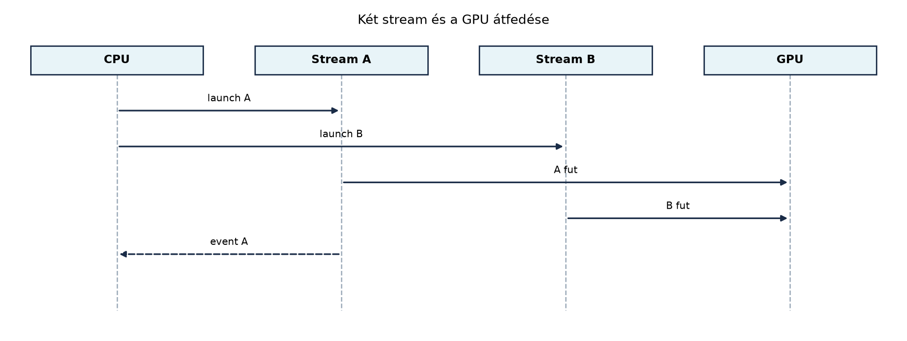

A GPU-programozásban a kernelindítás önmagában nem blokkoló. Amikor a host oldalon kiadunk egy kernelindítást, a CUDA-illesztőprogram a parancsot egy várakozási sorba helyezi, és a vezérlés azonnal visszatér a CPU-szálhoz. Ugyanez igaz a memóriamásolásokra és a legtöbb CUDA API-hívásra is: a művelet aszinkron módon, a GPU időzítésétől függően hajtódik végre. Ez a tulajdonság teszi lehetővé, hogy a CPU és a GPU párhuzamosan dolgozzon, és hogy több, egymástól független műveletet átfedésben hajtsunk végre az eszközön. A hatékony CUDA-programok egyik alappillére ennek az aszinkron végrehajtási modellnek a tudatos kihasználása.
Az aszinkronitás azonban fegyelmet is igényel. Ha a host oldalon nem várjuk meg egy művelet befejeződését, akkor nem férhetünk hozzá az eredményhez, és nem is indíthatunk olyan következő műveletet, amely attól az eredménytől függ. A szinkronizáció tehát nem egyszerűen egy „lassú” művelet, amelyet minimalizálni kell, hanem a helyes végrehajtás eszköze. A streamek és az események adják azt a finom vezérlési réteget, amellyel a párhuzamos végrehajtást és a szinkronizációt célzottan irányíthatjuk.
Ez az alfejezet bevezeti a CUDA stream és event fogalmát, bemutatja a default stream viselkedését, a szinkronizációs mintákat, valamint a tipikus hibákat, amelyek az aszinkron végrehajtásból adódnak. A következő alfejezet (25.2) erre építve tárgyalja az adatmozgatás és a számítás átfedését, valamint az aszinkron tervezési mintákat.

A CUDA végrehajtási modelljében a host és az eszköz egymástól függetlenül hajtja végre a saját utasításait. Amikor a host oldalon meghívunk egy CUDA API-függvényt, a hívás általában nem várja meg a tényleges eszközoldali végrehajtást. Ehelyett a műveletet egy streamhez rendeli, a stream pedig egy sorba rendezi a kiadott parancsokat. Az illesztőprogram ezeket a parancsokat elküldi a GPU-nak, amikor az eszköz erőforrásai lehetővé teszik, vagy amikor a szinkronizáció ezt megköveteli.
A stream tehát egy olyan végrehajtási csatorna, amelyben a parancsok sorrendje garantált. Ugyanazon streamen belül minden művelet abban a sorrendben hajtódik végre, ahogyan a host kiadta őket. Különböző streamekben lévő műveletek azonban egymáshoz képest tetszőleges sorrendben, vagy akár párhuzamosan is végrehajtódhatnak. Ez a két alapvető szabály adja a párhuzamosság lehetőségét, de egyben a szinkronizációért való felelősséget is.
A szinkronizáció alatt azt a műveletet értjük, amikor a host vagy egy másik stream megvárja, hogy egy adott streamen lévő összes korábban kiadott parancs befejeződjön. A CUDA több szintű szinkronizációt támogat:
cudaStreamSynchronize és a
cudaDeviceSynchronize.A gyakorlatban a szinkronizáció két célt szolgál: egyrészt a helyesség biztosítását, amikor egy művelet egy másik eredményétől függ, másrészt a mérések vagy a hibakezelés megbízhatóvá tételét.
cudaStream_t
típus és a stream-kezelésA CUDA C++ API-ban a streamet a cudaStream_t típus
reprezentálja, amely egy fogantyú (handle) egy eszközoldali végrehajtási
sorhoz. A stream-kezeléshez használt legfontosabb függvények a
következők:
cudaStreamCreate(cudaStream_t* pStream): létrehoz egy
új streamet. A függvény a pStream által mutatott változót
feltölti az új stream azonosítójával. A létrehozott streamhez tartozó
erőforrásokat a cudaStreamDestroy szabadítja fel.cudaStreamCreateWithFlags(cudaStream_t* pStream, unsigned int flags):
létrehoz egy streamet további beállításokkal. A flags
leggyakrabban a cudaStreamNonBlocking értéket kapja, amely
megváltoztatja a stream és a default stream közötti szinkronizációs
viselkedést.cudaStreamDestroy(cudaStream_t stream): felszabadítja a
streamhez tartozó erőforrásokat. A CUDA dokumentáció szerint a hívás
azonnal visszatér akkor is, ha a streamen még fut munka; az erőforrások
automatikusan szabadulnak fel, amint az eszköz a streamen lévő összes
munkával végzett. A destroy tehát nem blokkol és nem szakítja meg a
munkát; ha az eredményre szükség van, azért kell szinkronizálni
(cudaStreamSynchronize), nem a destroy miatt.cudaStreamSynchronize(cudaStream_t stream): a host szál
blokkolódik, amíg az adott streamen lévő összes korábban kiadott parancs
be nem fejeződik.A stream létrehozása nem igényel nagy erőforrást, de a túlzott számú stream létrehozása és megsemmisítése felesleges overheadet jelent. Általában néhány stream elegendő, és a streameket a program elején létrehozva, a végén megsemmisítve használjuk.
A streamet a kernelindításnál a
<<<grid, block, sharedBytes, stream>>>
szintaxis negyedik paramétereként adjuk meg. Ha ezt a paramétert
elhagyjuk, a kernel a default streamhez kerül. Ugyanígy
a memóriamásolásoknál a cudaMemcpyAsync függvény utolsó
paramétere a stream, míg a szinkron cudaMemcpy mindig a
default streamhez kötődik (és blokkoló).
Fontos megkülönböztetni a szinkron és az aszinkron memóriamásolást. A
cudaMemcpy hívás blokkoló: a host addig vár, amíg a másolás
be nem fejeződik. Ezzel szemben a cudaMemcpyAsync azonnal
visszatér, és a másolást a megadott streamben hajtja végre. Lapozható
(pageable) host memóriával a cudaMemcpyAsync nem teljesen
aszinkron: H2D másolásnál a hívás a másolás egy részének (egy
ideiglenes, pinned staging pufferbe történő átmásolásnak) végeztével
térhet vissza, D2H másolásnál pedig a host számára gyakorlatilag
szinkron lehet (lásd a CUDA Runtime API „API synchronization behavior”
szakaszát). Az igazi aszinkron viselkedéshez és a másolás–kernel
átfedéshez ezért pinned (page-locked) memória kell. Ezt a következő
alfejezetben részletezzük.
A CUDA programozás egyik legfontosabb, mégis gyakran félreértett fogalma a default stream. A default stream az a stream, amelyhez az explicit streamparaméter nélkül kiadott műveletek tartoznak. A viselkedése azonban attól függ, hogy a programot milyen módon fordítjuk le.
Hagyományosan a default stream (amelyet legacy default
streamnek is neveznek) egy speciális, szinkronizáló stream. Ez
azt jelenti, hogy a default streamen lévő műveletek implicit módon
szinkronizálódnak az összes többi blokkoló streamen (a
cudaStreamCreate-tel, flag nélkül létrehozott streameken)
lévő művelettel; a cudaStreamNonBlocking streamekkel nem.
Pontosabban: amikor egy műveletet a legacy default streamhez adunk, az
megvárja, amíg az összes korábban kiadott, más streamekben lévő művelet
befejeződik, és a később más streamekbe kiadott műveletek is megvárják,
amíg a default streamen lévő munka befejeződik. Ez a viselkedés
biztosítja, hogy a default stream a „biztonságos” választás: ha mindent
a default streamben végzünk, a sorrend garantált, és nem kell explicit
szinkronizációval foglalkoznunk.
A másik lehetőség a per-thread default stream. Ezt a
viselkedést a --default-stream per-thread fordítóflaggel
lehet engedélyezni a CUDA-alkalmazás fordításakor. Ebben az üzemmódban
minden CPU-szál saját, nem szinkronizáló default streamet kap. A
per-thread default stream nem szinkronizál automatikusan más
streamekkel, tehát a programozónak explicit módon kell gondoskodnia a
szinkronizációról, ha a helyesség megköveteli. Ez a mód nagyobb
párhuzamosságot tesz lehetővé, különösen több host szál esetén, de
nagyobb körültekintést igényel.
A cudaStreamNonBlocking flaggel létrehozott streamek nem
szinkronizálnak a legacy default streammel, azaz nem blokkolódnak a
default streamen lévő műveletekkel. Ez lehetővé teszi, hogy az ilyen
streamek a default streamtől függetlenül, átfedésben fussanak. A
cudaStreamCreate alapértelmezés szerint a legacy default
streamhez szinkronizáló streamet hoz létre, míg a
cudaStreamCreateWithFlags a
cudaStreamNonBlocking flaggel egy független streamet
ad.
Gyakorlati szempontból a következő irányelvek érvényesek:
cudaStreamNonBlocking flaggel létrehozni, hogy elkerüljük a
default streammel való implicit szinkronizációt.cudaEvent_tA streamek önmagukban a végrehajtás sorrendjét kezelik, de nem adnak
lehetőséget arra, hogy egy stream egy másik stream egy adott pontjához
szinkronizálódjon, vagy hogy időt mérjünk. Erre szolgálnak az események,
amelyeket a cudaEvent_t típus reprezentál.
Az esemény egy olyan jelölő, amelyet egy streamhez rendelhetünk.
Amikor az eseményt rögzítjük (cudaEventRecord), az esemény
bekerül a stream parancssorába az aktuális pozícióba. Az esemény akkor
válik „teljesítetté”, amikor a streamben az összes korábban kiadott
művelet befejeződött. Az esemény tehát egy szinkronizációs pontot jelöl
a streamben.
A legfontosabb eseménykezelő függvények:
cudaEventCreate(cudaEvent_t* event): létrehoz egy
eseményt.cudaEventRecord(cudaEvent_t event, cudaStream_t stream):
rögzíti az eseményt a megadott streamben. Ha a stream 0 (a
default stream), akkor a default streamen rögzíti.cudaEventSynchronize(cudaEvent_t event): a host szál
blokkolódik, amíg az esemény teljesítetté nem válik.cudaEventElapsedTime(float* ms, cudaEvent_t start, cudaEvent_t stop):
kiszámítja a két esemény közötti eltelt időt milliszekundumban. A
start és stop eseményeknek ugyanazon az
eszközön kell lenniük, és a stop eseményt a
start után kell rögzíteni.cudaEventDestroy(cudaEvent_t event): felszabadítja az
eseményt.Az események két fő felhasználási területe:
std::chrono vagy
clock), mert az események az eszköz időzítését használják,
és nem tartalmazzák a host–device kommunikáció késleltetését.cudaStreamWaitEvent függvénnyel egy stream
megvárhat egy másik streamben rögzített eseményt anélkül, hogy a hostot
blokkolná.A cudaStreamWaitEvent prototípusa:
cudaError_t cudaStreamWaitEvent(cudaStream_t stream, cudaEvent_t event, unsigned int flags);A hívás hatására a stream streamen lévő összes későbbi
művelet megvárja, amíg az event esemény teljesítetté válik.
Az esemény a rögzítéskor egy adott streamhez tartozott, de a
cudaStreamWaitEvent hívás után a várakozás a megadott
streamen történik. Ez lehetővé teszi, hogy streamközi függőségeket
alakítsunk ki anélkül, hogy a host szálat blokkolnánk.
Fontos megjegyezni, hogy az események nem csak szinkronizációra,
hanem finomabb vezérlésre is használhatók. Például egy eseményre várva
elkerülhetjük a cudaDeviceSynchronize használatát, amely az
egész eszközre vonatkozóan blokkol, és így elveszíthetjük a
párhuzamosságot.
A streamek és események kombinálásával több gyakori szinkronizációs mintát valósíthatunk meg. Tekintsük át a legfontosabbakat.
A legegyszerűbb minta: a host elindít egy vagy több műveletet egy
streamen, majd megvárja, amíg a stream befejeződik, hogy az eredményt
felhasználhassa. Erre a cudaStreamSynchronize hívás
szolgál.
cudaStream_t stream;
cudaStreamCreate(&stream);
kernel<<<grid, block, 0, stream>>>(input, output, n);
cudaMemcpyAsync(host_output, device_output, size, cudaMemcpyDeviceToHost, stream);
cudaStreamSynchronize(stream);
// Itt a host_output érvényes.
cudaStreamDestroy(stream);Ebben a példában a kernel és az őt követő aszinkron másolás ugyanazon
a streamen van, tehát a másolás csak a kernel befejeződése után
kezdődik. A cudaStreamSynchronize biztosítja, hogy a host
ne férjen hozzá az eredményhez, amíg a másolás be nem fejeződött.
Amikor nem egy teljes streamre, hanem egy adott pontra kell várni, eseményt használunk. Ez különösen akkor hasznos, ha egy streamen több, egymástól független feladat van, és a host egy köztes eredményre kíváncsi.
cudaEvent_t event;
cudaEventCreate(&event);
kernel1<<<grid1, block1, 0, stream>>>(...);
cudaEventRecord(event, stream);
kernel2<<<grid2, block2, 0, stream>>>(...);
cudaEventSynchronize(event);
// Itt a kernel1 eredménye már elérhető, de a kernel2 még futhat.Két stream közötti függőséget a cudaStreamWaitEvent
segítségével hozhatunk létre. Ez a minta akkor hasznos, ha egy streamen
lévő művelet egy másik streamen lévő művelet eredményétől függ, de a
hostot nem akarjuk blokkolni.
cudaStream_t stream1, stream2;
cudaStreamCreate(&stream1);
cudaStreamCreate(&stream2);
kernelA<<<gridA, blockA, 0, stream1>>>(...);
cudaEvent_t event;
cudaEventCreate(&event);
cudaEventRecord(event, stream1);
// stream2 megvárja, amíg a stream1-en a kernelA befejeződik.
cudaStreamWaitEvent(stream2, event, 0);
kernelB<<<gridB, blockB, 0, stream2>>>(...);Ebben a példában a kernelB csak akkor indul el, ha a
kernelA befejeződött, de a host nem blokkolódik. A
cudaStreamWaitEvent hívás a stream2 streamen
belül helyez el egy várakozási parancsot, így a sorrend garantált.
A streamek elsődleges célja, hogy lehetővé tegyék független műveletek párhuzamos végrehajtását. Például, ha egy nagy adathalmazon több, egymástól független számítást végzünk, azokat különböző streamekbe tehetjük, és a GPU ütemezője átfedésben futtathatja őket.
for (int i = 0; i < num_streams; ++i) {
cudaStreamCreateWithFlags(&streams[i], cudaStreamNonBlocking);
}
for (int i = 0; i < num_streams; ++i) {
int offset = i * chunk_size;
kernel<<<grid, block, 0, streams[i]>>>(data + offset, chunk_size);
}Ebben a vázlatban minden stream a saját adatszeletén dolgozik, és a streamek függetlenek. A GPU a rendelkezésre álló erőforrások függvényében párhuzamosan, vagy átlapolva hajtja végre a kerneleket.
Az aszinkron végrehajtásból számos jellegzetes hiba adódik. Ezek közül tekintsük át a leggyakoribbakat.
A leggyakoribb hiba, amikor a host közvetlenül a kernelindítás után olvassa a device memóriát vagy a hostra másolt eredményt, anélkül hogy szinkronizált volna. Mivel a kernel aszinkron, az eredmény még nem érvényes.
A kernelindítás aszinkron: a host azonnal továbbmegy. Ha a host
közvetlenül a kernel után olvasná a kimenetet, az még nem érvényes. A
szinkron cudaMemcpy ezt a default streamen megoldja:
// Helyes: a kernel és a szinkron cudaMemcpy is a default streamen van,
// a másolás megvárja a kernelt, és a host a másolás végéig blokkolódik.
kernel<<<grid, block>>>(d_out, n);
cudaMemcpy(h_out, d_out, size, cudaMemcpyDeviceToHost);
std::cout << h_out[0] << std::endl; // már érvényes értékA hiba tipikus esete az, amikor a másolás is aszinkron, és a host szinkronizáció nélkül olvas:
// Hibás
kernel<<<grid, block, 0, stream>>>(d_out, n);
cudaMemcpyAsync(h_out, d_out, size, cudaMemcpyDeviceToHost, stream);
std::cout << h_out[0] << std::endl; // Hibás: a másolás még nem fejeződött beItt a cudaMemcpyAsync azonnal visszatér, és a host
oldali h_out tartalma még nem érvényes. A helyes megoldás a
cudaStreamSynchronize(stream) hívása az olvasás előtt.
Ahogy korábban említettük, a legacy default stream szinkronizálódik
az összes többi streammel. Ez azt jelenti, hogy ha egy streamet
cudaStreamCreate-tel hozunk létre (nem
NonBlocking flaggel), és közben a default streamen is
végzünk műveletet, akkor a streamek közötti átfedés meghiúsulhat. A
programozó azt hiheti, hogy a streamek párhuzamosan futnak, de a default
stream miatt sorossá válnak.
A megoldás: vagy használjunk cudaStreamNonBlocking
flaget a streamek létrehozásakor, vagy kerüljük a default stream
használatát a párhuzamos szakaszban. Alternatív megoldás a per-thread
default stream mód engedélyezése.
Az eseményt mindig abban a streamben kell rögzíteni, amelyben a szinkronizálni kívánt művelet fut. Ha rossz streamet adunk meg, az esemény a várt pont előtt vagy után teljesülhet, ami hibás szinkronizációhoz vagy időméréshez vezet.
// Hibás: az eseményt a default streamen rögzítjük, nem a stream1-en
kernelA<<<gridA, blockA, 0, stream1>>>(...);
cudaEventRecord(event, 0); // default stream
cudaStreamWaitEvent(stream2, event, 0);Itt az esemény a default streamen van, nem a stream1-en.
Ha a stream1 cudaStreamNonBlocking flaggel
jött létre (vagy per-thread default stream módban fordítunk), az esemény
nem várja meg a kernelA befejeződését, mert a default
streamen nincs korábbi művelet. Blokkoló (flag nélküli)
stream1 és legacy default stream esetén viszont a default
streamen rögzített esemény implicit módon megvárja a blokkoló streamek
korábbi munkáját, így a hiba rejtve maradhat – ezért sem érdemes erre
építeni. Helyesen a cudaEventRecord(event, stream1) hívást
kell használni.
Az időmérésnél mind a start, mind a stop
eseményt ugyanabban a streamben kell rögzíteni, és a stop
eseményt a start után. Ha a két esemény különböző
streamekben van, a mért idő nem lesz értelmes, mert a streamek közötti
sorrend nem garantált.
A cudaStreamDestroy azonnal visszatér, és az erőforrások
automatikusan szabadulnak fel, miután a streamen lévő munka
befejeződött; a destroy önmagában tehát biztonságos. Hiba akkor
keletkezik, ha az eredményt a destroy után a host szinkronizáció nélkül
használja, vagy a művelet által használt puffert még a munka vége előtt
felszabadítjuk (cudaFree, free). Ezért a
szokásos minta:
cudaStreamSynchronize(stream);
cudaStreamDestroy(stream);A labor célja, hogy egy kis, ellenőrizhető példán keresztül bemutassa a streamek és események gyakorlati használatát. A példa egy vektorösszeadást hajt végre több, független adatszeleten, különböző streameket használva. Az eseményekkel mérjük az egyes streamek futási idejét, és egy eseményt használunk a streamek közötti szinkronizáció bemutatására is.
A laborhoz tartozó forráskód CUDA C++17 nyelven íródik, és feltételezi a korábbi fejezetekben bevezetett hibakezelési makrót. A mérési környezet a következő (reprezentatív, nem ellenőrzött, mivel a labor nem került futtatásra):
-arch=sm_80
vagy annak megfelelő)A kódban a hibakezeléshez saját makrót használunk, amely ellenőrzi a
cudaGetLastError-t és a szinkronizációt.
// stream_event_lab.cu
// CUDA C++17
// Streamek és események labor
#include <cuda_runtime.h>
#include <iostream>
#include <vector>
#include <cmath>
#include <cstdlib>
// Hibakezelő makró
#define CUDA_CHECK(call) \
do { \
cudaError_t err = call; \
if (err != cudaSuccess) { \
std::cerr << "CUDA error at " << __FILE__ << ":" << __LINE__ \
<< ": " << cudaGetErrorString(err) << std::endl; \
std::exit(EXIT_FAILURE); \
} \
} while (0)
__global__ void vectorAdd(const float* A, const float* B, float* C, int n) {
int idx = blockIdx.x * blockDim.x + threadIdx.x;
if (idx < n) {
C[idx] = A[idx] + B[idx];
}
}
int main() {
const int N = 1 << 24; // 16 Mi elem
const int num_streams = 4;
const int chunk_size = N / num_streams;
const size_t bytes = N * sizeof(float);
// Host memória: lapozható (pageable) std::vector; ebben a laborban a stream/event
// mechanikát mutatjuk be, a másolás–számítás átfedéshez pinned memória kell (25.2)
std::vector<float> h_A(N), h_B(N), h_C(N);
for (int i = 0; i < N; ++i) {
h_A[i] = static_cast<float>(i) * 0.001f;
h_B[i] = static_cast<float>(i) * 0.002f;
}
float* d_A; float* d_B; float* d_C;
CUDA_CHECK(cudaMalloc(&d_A, bytes));
CUDA_CHECK(cudaMalloc(&d_B, bytes));
CUDA_CHECK(cudaMalloc(&d_C, bytes));
cudaStream_t streams[num_streams];
for (int i = 0; i < num_streams; ++i) {
CUDA_CHECK(cudaStreamCreateWithFlags(&streams[i], cudaStreamNonBlocking));
}
cudaEvent_t start_events[num_streams];
cudaEvent_t stop_events[num_streams];
for (int i = 0; i < num_streams; ++i) {
CUDA_CHECK(cudaEventCreate(&start_events[i]));
CUDA_CHECK(cudaEventCreate(&stop_events[i]));
}
// Adatok feltöltése a device-ra a default streamen (szinkron)
CUDA_CHECK(cudaMemcpy(d_A, h_A.data(), bytes, cudaMemcpyHostToDevice));
CUDA_CHECK(cudaMemcpy(d_B, h_B.data(), bytes, cudaMemcpyHostToDevice));
// Több streamen indítjuk a kerneleket, mindegyik a saját szeletén
for (int i = 0; i < num_streams; ++i) {
int offset = i * chunk_size;
CUDA_CHECK(cudaEventRecord(start_events[i], streams[i]));
// A kernelindítás az adott streamben
int threads = 256;
int blocks = (chunk_size + threads - 1) / threads;
vectorAdd<<<blocks, threads, 0, streams[i]>>>(
d_A + offset, d_B + offset, d_C + offset, chunk_size);
CUDA_CHECK(cudaGetLastError()); // kernelindítási hibák ellenőrzése
CUDA_CHECK(cudaEventRecord(stop_events[i], streams[i]));
}
// Egy esemény a szinkronizációhoz: az utolsó stream megvárja az összes többi
// stream stop eseményét, majd ezen a streamen rögzítjük az all_done eseményt.
const int last = num_streams - 1;
cudaEvent_t all_done;
CUDA_CHECK(cudaEventCreate(&all_done));
for (int i = 0; i < last; ++i) {
CUDA_CHECK(cudaStreamWaitEvent(streams[last], stop_events[i], 0));
}
CUDA_CHECK(cudaEventRecord(all_done, streams[last]));
// Az all_done csak akkor teljesül, ha mind a négy stream munkája kész.
CUDA_CHECK(cudaEventSynchronize(all_done));
// Események közötti idők kiszámítása
for (int i = 0; i < num_streams; ++i) {
float elapsed_ms = 0.0f;
CUDA_CHECK(cudaEventElapsedTime(&elapsed_ms, start_events[i], stop_events[i]));
std::cout << "Stream " << i << " idő: " << elapsed_ms << " ms" << std::endl;
}
// Eredmény visszamásolása és ellenőrzése
CUDA_CHECK(cudaMemcpy(h_C.data(), d_C, bytes, cudaMemcpyDeviceToHost));
bool correct = true;
for (int i = 0; i < N; ++i) {
float expected = h_A[i] + h_B[i];
if (fabs(h_C[i] - expected) > 1e-5f) {
correct = false;
std::cerr << "Hiba az indexen: " << i << std::endl;
break;
}
}
std::cout << (correct ? "Az eredmény helyes." : "Az eredmény hibás.") << std::endl;
// Takarítás
for (int i = 0; i < num_streams; ++i) {
CUDA_CHECK(cudaEventDestroy(start_events[i]));
CUDA_CHECK(cudaEventDestroy(stop_events[i]));
CUDA_CHECK(cudaStreamDestroy(streams[i]));
}
CUDA_CHECK(cudaEventDestroy(all_done));
CUDA_CHECK(cudaFree(d_A));
CUDA_CHECK(cudaFree(d_B));
CUDA_CHECK(cudaFree(d_C));
return 0;
}A kódban megfigyelhető, hogy a kerneleket négy különböző streamben
indítjuk, mindegyik a saját adatszeletén dolgozik. Az eseményeket minden
stream elején és végén rögzítjük, így megmérhetjük az egyes streamek
futási idejét. A streamek közötti szinkronizációhoz egy
all_done eseményt használunk: az utolsó stream megvárja a
másik három stream stop_events[i] eseményét
(cudaStreamWaitEvent), majd az utolsó streamen rögzítjük az
all_done eseményt. Mivel az utolsó stream saját
stop eseménye a streamen belüli sorrend miatt már megelőzi
az all_done rögzítését, az all_done csak akkor
teljesül, ha mind a négy stream befejeződött; a host a
cudaEventSynchronize segítségével várja meg. Ezután a
cudaEventElapsedTime hívások már teljesült eseményekre
vonatkoznak, és a (default streamen végzett) visszamásolás is csak a
kész kernelek után indul. A korábbi, hibás változatban minden stream a
3. stream eseményére várt, az all_done pedig csak
a 3. streamen volt rögzítve, így a 0–2. stream befejezését senki nem
várta meg; ez versenyhelyzethez és cudaErrorNotReady
hibához vezethetett. Egyszerűbb, de durvább alternatíva a
cudaDeviceSynchronize(), illetve minden stream
cudaStreamSynchronize-ja.
A program kimenetének alakja (az értékek helyőrzők, a labor nem került futtatásra; a mért naplót a hallgató tölti ki):
Stream 0 idő: <mért – kitöltendő> ms
Stream 1 idő: <mért – kitöltendő> ms
Stream 2 idő: <mért – kitöltendő> ms
Stream 3 idő: <mért – kitöltendő> ms
Az eredmény helyes.Várt viselkedés (nem mérés): a négy stream közel azonos időt vesz igénybe, mivel a feladat egyenletesen oszlik meg; a teljes futási idő nem feltétlenül a leglassabb stream idejének négyszerese, mert a streamek átfedésben futhatnak. A kernelindítás első hívása modulbetöltési költséget is tartalmazhat, ezért a méréshez warm-up (egy eldobott futás) szükséges.
A labor fordítási parancsa:
nvcc -std=c++17 -O3 -o stream_event_lab stream_event_lab.cuA futtatás:
./stream_event_labA méréshez a fenti kódot egy eldobott (warm-up) futás után legalább öt-tíz alkalommal le kell futtatni, és az átlagot, valamint a szórást rögzíteni kell. Az itt szereplő napló csak formátumminta, mért értéket nem tartalmaz.
cudaStreamSynchronize és a
cudaDeviceSynchronize között? Mikor melyiket érdemes
használni?cudaStreamNonBlocking flaggel hozod létre?cudaEventRecord és a
cudaStreamWaitEvent? Hogyan alakíthatsz ki ezekkel
streamközi függőséget a host blokkolása nélkül?all_done esemény
megvárására a cudaEventElapsedTime és a
cudaMemcpy (szinkron) előtt? Lehetne-e egyszerűbb
szinkronizációt használni?Megoldókulcs (röviden):
cudaStreamSynchronize egyetlen streamre vár, a
cudaDeviceSynchronize az eszköz összes munkájára; ha elég
egy stream eredménye, az előbbi kíméli az átfedést.cudaStreamNonBlocking ezt elkerüli.cudaStreamWaitEvent egy másik streamet várakoztat rá, a
host nem blokkolódik.cudaEventElapsedTime csak teljesült eseményekre ad
értelmes eredményt, a nem blokkoló streamek és a default streamen
kiadott visszamásolás között pedig nincs implicit szinkron, ezért a
másolás előtt meg kell várni minden stream befejeződését. Egyszerűbb, de
durvább megoldás a cudaDeviceSynchronize().A következő alfejezetben (25.2) az adatmozgatás és a számítás átfedését vizsgáljuk meg, kihasználva a streamek és események nyújtotta aszinkronitást.